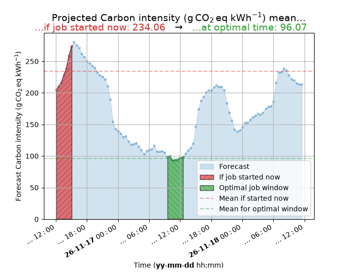

All in One View
Content from Using CATS
Last updated on 2026-11-16 | Edit this page
Overview
Questions
- How do you use CATS to run computational jobs when grid carbon intensity is lowest?
Objectives
- How to run CATS jobs with the at scheduler.
- How to run CATS jobs with the slurm scheduler.
Running CATS without a scheduler
Challenge 1: Run CATS without a scheduler
CATS has one required argument, -d or
--duration for the duration of the job in minutes. This is
usually a best estimate, but it should be the upper end of what is
likely.
By default CATS uses the UK Carbon Intensity provider to get grid carbon intensity. This needs to know your approximate location to work out which of the UK’s (or more precisely Britain’s, as Northern Ireland is part of the Irish grid) 14 grid regions you are located in. Obviously this needs to be somewhere in the UK for there to be any valid UK Carbon Intensity data. We’ll show an example of looking up locations outside the UK later on. With no location specified CATS will try to work out your location from your internet IP address.
OUTPUT
WARNING:root:Use of config.yaml is deprecated. We suggest renaming to 'cats_config.yml'
WARNING:root:location not provided. Estimating location from IP address: SA68.
The.____ ..... __ .... ________ . ______...
.. / __)...../ \....(__ __).) ____)....
..| /......./ \......| |...( (___........
..| |limate./ () \ware.| |ask.\___ \cheduler
..| \__...| __ |....| |....____) )....
...\ )..| (..) |....| |...( (..
Best job start time = 2026-11-17 08:49:43
Carbon intensity if job started now = 212.86 gCO2eq/kWh
Carbon intensity at optimal time = 105.80 gCO2eq/kWhSpecifying Locations
Challenge 2: specify your location to CATS
CATS can be given a location by using the first part of a UK
postcode, for example L1 for Liverpool, SW1A for London (Westminster),
OX1 for Oxford, M1 for Manchester, EH1 for Edinburgh or IV1 for
Inverness. This is specified with the -l or
--location option.
Try specifying a location for your job using the first part of a UK postcode. Try comparing different regions using the postcodes listed above. On a windy day Edinburgh or Manchester will often have lower carbon intensity since those regions have a lot of wind turbines. On sunnier days Oxford or London can be lower as there is more solar power in the South of England. You can check the current carbon intensity on the website https://carbonintensity.org.uk.
Running CATS with a Scheduler
Challenge 3: Running CATS with the at scheduler
The at scheduler dates back to early versions of a Unix
and is used to run a given command at a certain time. It features some
basic job queueing capabilities where multiple jobs can be waiting to
run at different times. CATS can invoke at automatically by
using setting the -s or --scheduler option to
“at” and the -c option to specify the command to run.
This should finish the output with the job’s number and scheduled start time.
OUTPUT
job 1 at Tue Nov 17 22:50:00 2026We can also check the queue with the atq command:
OUTPUT
1 Tue Nov 17 22:50:00 2026 a colinIf we decide we don’t want to run the job then we can use the
atrm command to remove it from the queue.
Challenge 4: Running CATS with the Slurm scheduler
The Slurm scheduler is a popular open source scheduler used on many
HPC systems including several UK national facility systems such as
Isambard, Archer, Bede, Baskerville, Dawn and JASMIN. CATS can invoke
Slurm by using setting the -s or --scheduler
option to “slurm” and the -c option to specify the command
to run. In this case the command needs to be a Slurm job file that
itself specifies what Slurm will run and parameters given to Slurm.
Let’s write out a Slurm job file that does similar to what we used
above. The --account, --qos and
--partition options will vary between systems and aren’t
always needed.
#!/bin/bash
#SBATCH --job-name test_job
#SBATCH --time 00:01 # timeout in HH:MM
#SBATCH --account=myaccount
#SBATCH --qos=debug
#SBATCH --partition=debug
echo "Hello World"This should finish the output with the job’s number and scheduled start time.
OUTPUT
The.____ ..... __ .... ________ . ______...
.. / __)...../ \....(__ __).) ____)....
..| /......./ \......| |...( (___........
..| |limate./ () \ware.| |ask.\___ \cheduler
..| \__...| __ |....| |....____) )....
...\ )..| (..) |....| |...( (..
Best job start time = 2026-11-17 10:30:17
Carbon intensity if job started now = 199.03 gCO2eq/kWh
Carbon intensity at optimal time = 93.75 gCO2eq/kWh
Submitted batch job 1245678
We can also check the queue with the squeue command, the
--me option just displays jobs owned by your user.
OUTPUT
JOBID PARTIT QOS NAME USER NODE CPUS ST TIME TIME_LEFT PRIORITY NODELIST(REASON)
1245678 debug debug test_job colinsau 1 1 PD 0:00 1:00 171231 (BeginTime)The “(BeginTime)” in the final column means the job has a specified time to start (2026-11-17 10:30:17 in the above example) that we’ve not yet reached.
If we decide we don’t want to run the job then we can use the
scancel command to remove it from the queue.
Using a Configuration File
Challenge 5: Using a CATS configuration file to specify location
Instead of specifying arguments on the command line, CATS can also read these from a configuration file. This is useful if you are repeatedly running CATS.
Note: Currently (as of v1.2.1) CATS uses a YAML file for this configuration, in the near future this will change to a TOML file which has slightly different formatting, but the keys used in the file are the same.
Let’s create a file called myconfig.yaml and set our
location inside it.
Now we can re-run CATS with the --config option and
without the --location option.
Challenge 6: Improving carbon footprint estimation by specifying the system properties
So far CATS has been trying to minimise the carbon intensity of running our job, but we don’t know how much carbon dioxide we’ve emitted/saved since we’ve not specified anything about the system that will be running the job. For this to work we need to specify a few things about the profile of the system we’re running on:
- The Power Usage Efficiency (PUE) of the data centre running the job, this is the ratio of power going to non-compute tasks like cooling and the compute itself. A typical value is between 1.2 and 2.0.
- The power used by each CPU core and how many CPU cores we’ll be using. CATS assumes we are keeping the CPU busy during the job’s execution.
- The amount of memory (RAM) the job is using.
We can specify all of this in the config file:
YAML
location: "OX1"
PUE: 1.4
profiles:
my_cpu_only_profile:
cpu:
model: "Xeon Gold 6142"
power: 9.4 # in W, per core
nunits: 2Now we need to tell CATS how much memory (in gigabytes) using the
--memory option, how many CPU cores we’ll use with the
--cpu option and adding the --footprint option
to print out the carbon footprint.
OUTPUT
WARNING:root:Using default profile my_cpu_only_profile
The.____ ..... __ .... ________ . ______...
.. / __)...../ \....(__ __).) ____)....
..| /......./ \......| |...( (___........
..| |limate./ () \ware.| |ask.\___ \cheduler
..| \__...| __ |....| |....____) )....
...\ )..| (..) |....| |...( (..
Best job start time = 2026-11-17 09:30:09
Carbon intensity if job started now = 231.81 gCO2eq/kWh
Carbon intensity at optimal time = 96.08 gCO2eq/kWh
Estimated emissions if job started now = 9.514526420101127
Estimated emissions at optimal time = 3.9436571399415894 (- 5.570869280159538)
warning: commands will be executed using /bin/sh
job 59 at Tue Nov 17 09:30:00 2026Plotting Carbon Intensity
Challenge 6: Outputting a graph showing the carbon intensity
CATS can create a graph illustrating the carbon intensity of the job running now and at its target time. To do this we first need to install the plots sub-package.
Now run CATS with the --plot option and you should see a
graph illustrating the carbon intensity over the next 48 hours with the
job starting now in red and at its target time in green. Add the
--save-plot option followed by a filename if you want to
save this file instead of displaying it.

- The
--durationor-doptions to CATS specify the job duration. - The
--locationor-loptions to CATS specify the location where the job is running. This is used to identify the grid region it is running in. By default this uses the UK Carbon Intensity data provider.